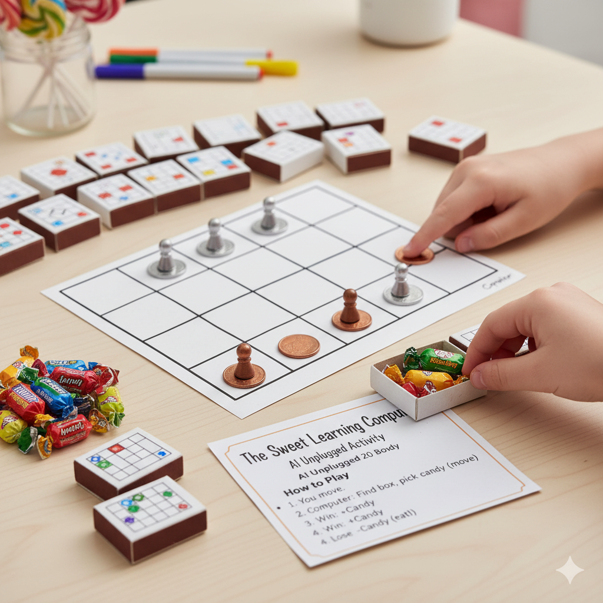

How Do Computers Learn?
Have you ever learned how to ride a bike? You probably fell a few times before you got the hang of it. Each time you fell, your brain learned what not to do. Machine Learning is when we let computers learn in a similar way!
What's it all about?
Machine learning is a type of AI where we don't give the computer all the answers. Instead, we give it a way to learn on its own. There are a few ways to do this:
- Supervised Learning: This is like learning with a teacher. We give the computer lots of examples that are already labeled. For example, we show it pictures of cats that are labeled "cat" and pictures of dogs that are labeled "dog". The computer learns to tell the difference.
- Unsupervised Learning: This is like learning on your own. We give the computer a bunch of information and it has to find patterns on its own. For example, it might group customers together based on what they buy.
- Reinforcement Learning: This is what the "Sweet Learning Computer" game is all about! The computer learns by trial and error. It gets rewards for good moves and punishments for bad moves. Over time, it learns to make better and better decisions.
Real-World Applications
- Spam Filters: Your email uses machine learning to figure out which emails are spam and which are important.
- Medical Diagnosis: Doctors can use machine learning to help them diagnose diseases by looking at medical images like X-rays.
- Product Recommendations: When you're shopping online and the website suggests other things you might like, that's machine learning at work!
- Self-Driving Cars: These cars use reinforcement learning to learn how to drive safely in different situations.
🍬 The Sweet Learning Computer 🍭
This is a yummy activity from AI Unplugged that shows how a "machine" made of candy can learn to play a game.
You will need:
- A friend to play with
- A Hexapawn game board (a 3x3 grid)
- 3 coins of one color (for you) and 3 of another color (for the computer)
- About 20 small boxes (like matchboxes)
- Lots of candy!
How to Play:
This game is called Hexapawn. The goal is to get one of your coins to the other side of the board, or to stop the other player from being able to move.

- Set up the board with the coins in the first row on each side.
- You go first. You can move one of your coins forward one space, or capture one of the computer's coins by moving diagonally.
- Now it's the computer's turn. The computer is made of the matchboxes. Each box will have a picture of a board position on it, and inside will be candies that show the possible moves from that position.
- Find the box that matches the current board. Take out one candy (one move) and move the computer's coin.
- If the computer wins, put the candy back and add another one! The computer is rewarded for winning.
- If the computer loses, it gets "punished" by eating the candy from the last move. That move is removed from the box.
- Play again! After a few games, the computer will have "learned" how to play better because it has removed its bad moves.
🏡 Back to All Lessons